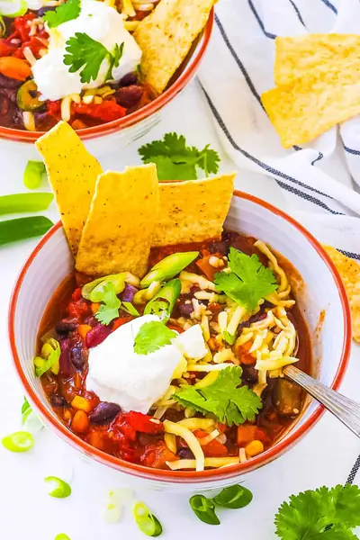

The Best Instant Pot Vegetarian Chili

Ingredients
- 1 tbsp olive oil
- 1 red bell pepper (diced)
- 1 green bell pepper (diced)
- 1 yellow bell pepper (diced)
- 1 red onion (diced)
- 5 garlic cloves (minced)
- 1 cup vegetable broth
- 15 oz kidney beans, drained and rinsed (1 can)
- 15 oz black beans, drained and rinsed (1 can)
- 15 oz pinto beans, drained and rinsed (1 can)
- 1 cup frozen corn
- 28 oz crushed tomatoes (1 large can)
- 1 tbsp chili powder (use a heaping tbsp or add more to taste)
- 1 tsp ground cumin
- 1 tsp ground coriander
- 1 tsp unsweetened cocoa powder
- ½ tsp garlic powder
- ⅛ tsp crushed red pepper (more or less to taste)
- a couple splashes of soy sauce
- 1-2 tsp salt (more or less to taste)
- ½ tsp smoked paprika
- ½ tsp regular paprika
- shredded cheddar cheese
- green onions
- diced tomatoes
- plain Greek yogurt (or low fat sour cream or vegan sour cream)
- crushed tortilla chips
Steps
- Turn your instant pot to the Saute function, and add your olive oil, bell peppers, onion, and garlic. Saute lightly for 2-3 minutes.
- Add everything else into the pot (beans through paprika in the list above) and stir to combine. Close your instant pot and pressure cook on high for 4 minutes
- Once the pressure cooking is done, let it natural release for 5 minutes, then quick release the rest of the pressure.
- Serve warm with any toppings you like! 1 Tbsp cheese, low fat sour cream or plain greek yogurt, diced tomatoes, green onions, or tortilla chips.
Recipe by Anjali Shah · The Picky Eater, from The Picky Eater. Saved here for personal use; the original has the full notes, tips and photos. Open original